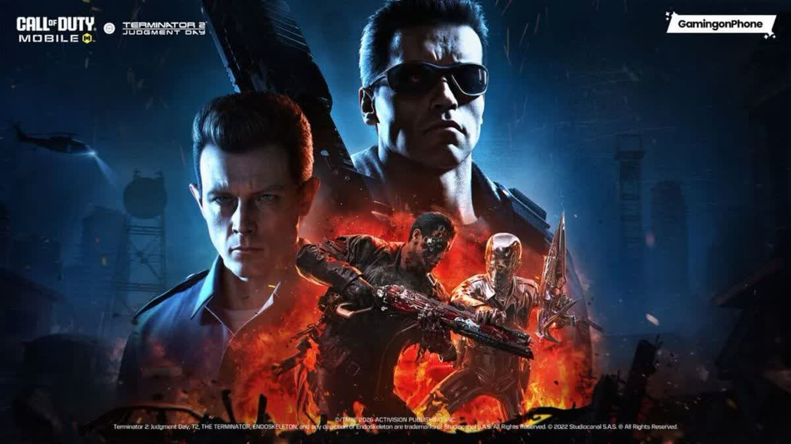

همکاری ترمیناتور ۲ (Terminator : Judgment Day با کالاف دیوتی موبایل :Call of Duty Mobile) یکی از مورد انتظارترین کراس اوورهای سال محسوب می شود. این همکاری با هدف اضافه کردن شخصیت های افسانه ای اسکین های اختصاصی حالت های محدود رویدادهای ویژه و آیتم های کلکسیونی به بازی طراحی شده و توانسته توجه میلیون ها بازیکن را در سراسر جهان به خود جلب کند. در این مقاله تمامی جزئیات منتشر شده درباره همکاری ترمیناتور ۲ و کالاف دیوتی موبایل را بررسی می کنیم؛ از زمان انتشار گرفته تا شخصیت ها اسکین های لجندری سلاح های اختصاصی رویدادهای محدود جوایز رایگان و تأثیر این همکاری بر آینده بازی همچنین شما می توانید اقدام به خرید سی پی کالاف و بتل پس کالاف کنید تا به شما کمک کند تا بتوانید در کالاف بهترین عملکرد را داشته باشید. همکاری ترمیناتور ۲ با کالاف دیوتی موبایل چیست؟ کالاف دیوتی موبایل طی سال های گذشته همکاری های موفقی با مجموعه های بزرگی مانند Ghost in the Shell. NieR. Attack on Titan. Girls' Frontline و شخصیت های محبوب دنیای بازی و سینما داشته است. اکنون نوبت به یکی از محبوب ترین فیلم های علمی تخیلی تاریخ رسیده است. در این همکاری فضای تاریک و آخرالزمانی فیلم ترمیناتور وارد دنیای کالاف دیوتی موبایل میشود و بازیکنان می توانند با شخصیت های معروف این مجموعه در میدان نبرد حضور پیدا کنند. این رویداد تنها یک بسته اسکین ساده نیست؛ بلکه شامل مجموعه ای از محتواهای جدید خواهد بود که تجربه بازی را کاملاً متفاوت میکند. زمان انتشار همکاری ترمیناتور ۲ و کالاف دیوتی موبایل طبق اطلاعات منتشر شده این همکاری همزمان با یکی از فصل های جدید بازی در دسترس قرار خواهد گرفت. معمولاً اکتیویژن چنین کراس اوورهایی را در ابتدای فصل جدید منتشر می کند تا بازیکنان فرصت کافی برای شرکت در رویدادها داشته باشند. انتظار می رود محتواهای این همکاری شامل موارد زیر باشند آغاز رویداد ویژه عرضه گردونه اختصاصی اضافه شدن باندل های جدید مأموریت های روزانه جوایز رایگان آیتم های محدود زمانی به دبیل محدود بودن مدت رویداد بازیکنان باید بازه زمانی نسبت به دریافت آیتم ها اقدام کنند. شخصیت های قابل انتظار در این همکاری یکی از جذاب ترین بخش های این کراس اوور حضور شخصیت های مشهور فیلم ترمیناتور است. T-۸۰۰ بدون شک مهم ترین شخصیت این همکاری ۸۰۰- خواهد بود؛ همان ربات افسانه ای با ظاهر آرنولد شوارتزنگر ویژگی های احتمالی اسکین طراحی بسیار دقیق . انیمیشن اختصاصی صدای ویژه . افکت های منحصر به فرد حالت ورود اختصاصی Finish Move اختصاصی T-۱۰۰۰ یکی دیگر از شخصیت های احتمالی ۱۰۰۰-T است. این شخصیت به دلیل قابلیت تغییر شکل میتواند یکی از جذاب ترین اپراتورهای بازی باشد. ویژگی های احتمالی افکت مایع فلزی انیمیشن ویژه . ظاهر كاملاً سینمایی . اجرای اختصاصی هنگام حذف دشمن سارا كانر یکی از محبوب ترین شخصیت های فیلم نیز احتمالاً به بازی اضافه خواهد شد. اسکین سارا کانر میتواند شامل موارد زیر باشد لباس کلاسیک فیلم اسلحه اختصاصی کوله ویژه . ایموت انحصاری جان کانر رهبر مقاومت انسان ها نیز از شخصیت هایی است که بسیاری از بازیکنان انتظار حضور او را دارند. گردونه اختصاصی ترمیناتور ۲ تقریباً تمامی همکاری های بزرگ کالاف دیوتی موبایل دارای Lucky Draw اختصاصی هستند. در این گردونه معمولاً آیتم های زیر وجود دارد اپراتور لجندری سلاح لجندری Charm Avatar Calling Card Wingsuit Backpack Vehicle Skin Grenade Skin Frame احتمال دارد گردونه این همکاری نیز از همین ساختار استفاده کند. باندل ویژه ترمیناتور ۲ علاوه بر گردونه احتمال عرضه Bundle نیز وجود دارد. این بسته ها معمولاً شامل موارد زیر هستند اسکین اپراتور Blueprint اسپری ايموت کارت بازیکن قاب پروفایل جوایز رایگان همکاری ترمیناتور ۲ همیشه بخشی از همکاری های کالاف دیوتی موبایل به صورت رایگان ارائه میشود. بازیکنان احتمالاً میتوانند آیتم های زیر را دریافت کنند اسکین رایگان Calling Card Avatar Battle Pass XP Weapon XP Credits Camo Sticker برای دریافت این جوایز کافی است مأموریت های روزانه یا هفتگی رویداد را تکمیل کنید. طراحی محیط بازی همکاری های بزرگ معمولاً تغییراتی در محیط بازی ایجاد میکنند. ممکن است شاهد موارد زیر باشیم آسمان آخرالزمانی نورپردازی قرمز انفجارهای بزرگ ربات های نابود شده ماشین آلات آینده جلوه های سینمایی تم بتل پس X nikogem.com در صورت هم زمانی این همکاری با فصل جدید احتمال دارد تم کلی Battle Pass نیز از فضای ترمیناتور الهام گرفته باشد. ویژگی های احتمالی اپراتورهای آینده سلاح های رباتیک اسکین خودرو یا راشوت جدید Frame Avatar ایموت های جدید nikogem.com X ایموت ها بخش جدایی ناپذیر هر کراس اوور هستند. احتمال عرضه ایموت هایی مانند . حرکت معروف ۸۰۰-T ژست مبارزه ورود سینمایی پایان مسابقه وجود دارد. وسایل نقلیه اختصاصی یکی دیگر از آیتم های مورد انتظار اسکین وسایل نقلیه است. احتمال عرضه اسکین برای Motorcycle ATV• Helicopter Tank تأثیر این همکاری بر آینده کالاف دیوتی موبایل همکاری با مجموعه ای مانند ترمیناتور نشان می دهد که توسعه دهندگان همچنان قصد دارند محتوای متفاوت و هیجان انگیزی را به بازی اضافه کنند. چنین رویدادهایی معمولاً باعث افزایش فعالیت بازیکنان بازگشت کاربران قدیمی و جذب مخاطبان جدید می شوند. همچنین موفقیت این کراس اوور میتواند زمینه ساز همکاری های بزرگتر با دیگر فیلم ها و مجموعه های محبوب در آینده باشد. جمع بندی هیجان انگیزترین رویدادهای این بازی به شمار همکاری ترمیناتور ۲ و کالاف دیوتی موبایل یکی از میرود و می تواند با اضافه کردن شخصیت های افسانه ای مانند ۸۰۰- و ۱۰۰۰- اسکین های لجندری سلاح های اختصاصی گردونه ویژه باندل های محدود مأموریت های اختصاصی و جوایز رایگان تجربه ای متفاوت را برای بازیکنان رقم بزند. اگر این همکاری مطابق انتظارات منتشر شود بدون تردید به یکی از ماندگارترین کراس اوورهای تاریخ کالاف دیوتی موبایل تبدیل خواهد شد.